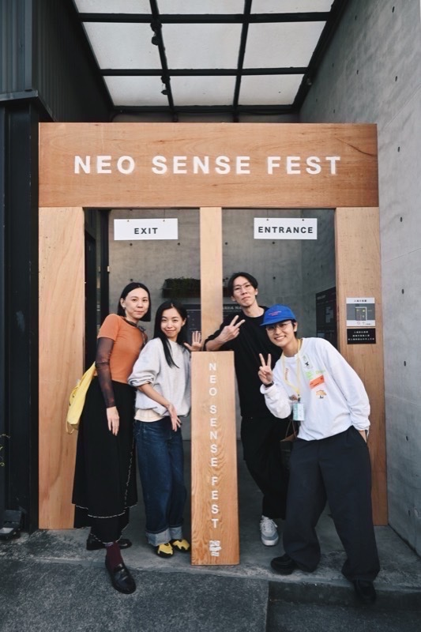
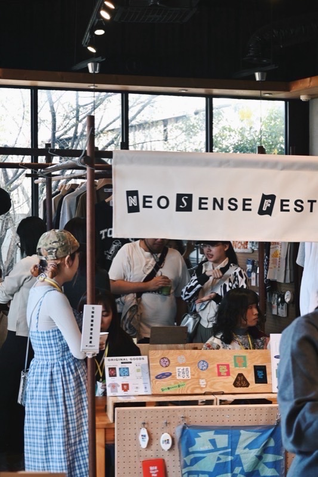
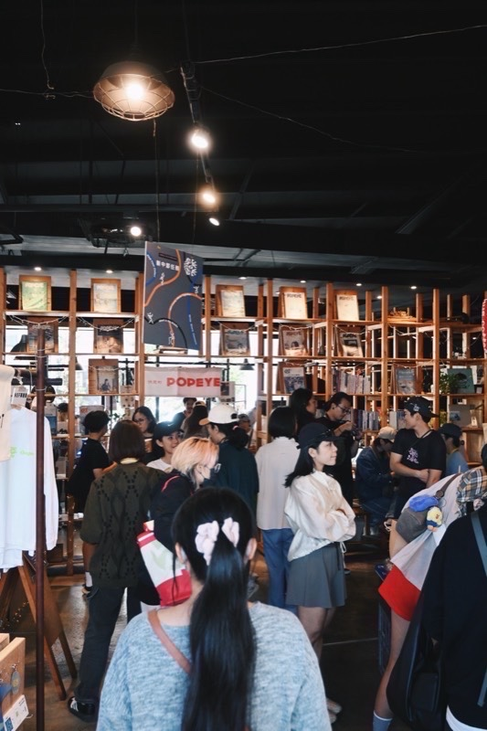
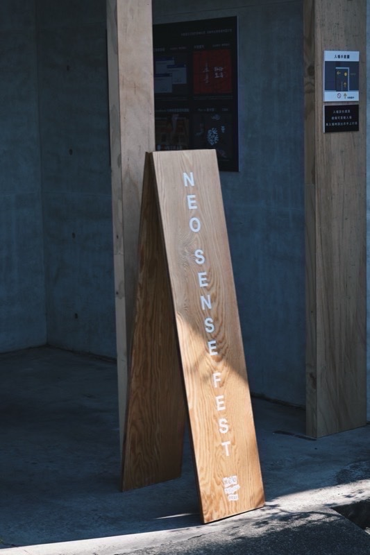
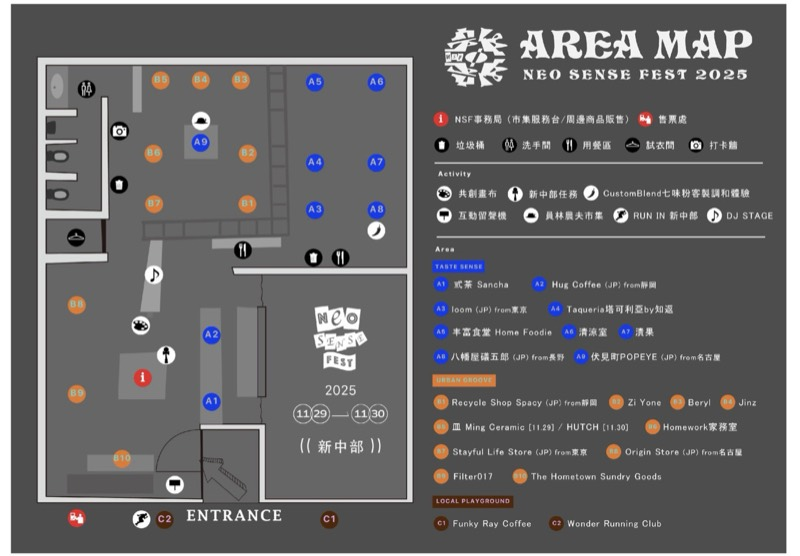

共同主催
ziinさん
SITE店主・Neo Sense Fest主催
員林・台北
大切にしている視点好奇心を持って世界と向き合い、面白いと思ったことは、まず自分でやってみること。
Collaboration — 台湾取材のアテンド
日本語表記：新感覚マーケット
員林で毎年開催される「NEO SENSE FEST 新感覺市集」は、Modern Localを出発点に、地域の文化を大切にしながら、新しい暮らしの提案をしていくマーケットです。今回の台湾取材は、このイベントとのコラボレーションで、アテンドしていただきました。ziinさんとKenさんが、共同で主催しています。
NEO SENSE FEST 公式（@neosensefest.tw）

About
台湾国内外から、ブランドやクリエイターが集まり、カルチャー、音楽、フード、遊びなど、さまざまなコンテンツを通して交流が生まれる。秋の終わりだけの、「ローカルモダン」なパーティーです。
何より大切にしているのは、
このイベントをきっかけに生まれる交流やつながり。
ここで出会い、友人になり、新しいコラボレーションが始まることも少なくないそうです。そうした積み重ねが、毎年少しずつイベントを育て、自分たちの暮らす街を、より面白く、豊かな場所にしてくれている。ziinさんの「面白いと思ったことは、まず自分でやってみる」、Kenさんの「自分が楽しめて、かつビジネスとしても成り立たせる」という、二人の大切にしている視点とも、通じるイベントです。



Hosts
取材のアテンドをしてくださった、ziinさんとKenさん。台湾の人々のページでも紹介しています。
共同主催
SITE店主・Neo Sense Fest主催
員林・台北
大切にしている視点好奇心を持って世界と向き合い、面白いと思ったことは、まず自分でやってみること。

共同主催
丰富食堂＆The Hometown Sundry Goods店主・Neo Sense Fest主催
員林
大切にしている視点自分が楽しめて、かつ収益（ビジネス）としても成り立たせること。
2026 — 今年の開催
南にまだ残っている夏を、員林に持ってくる。
DATE
2026.12.12 SAT — 12.13 SUN
DAY 1 10:00–20:00
DAY 2 10:00–18:00
SCALE
約30組
台湾各地や海外のブランド・クリエイター。
過去の来場者は、2日間で約700人。
今年のテーマは「NEO SOUTH WAVE」。今年は台湾南部や日本南部を少しずつ巡り、それぞれの街でお店やブランド、クリエイターと出会い、その土地ならではの暮らしや文化に触れてきたそうです。「みんなにも紹介したい」と思った南のさまざまな要素を、音楽、食、アート、そして会場の企画を通して、員林に持ち帰ります。
情報は、NEO SENSE FESTからの2026年の告知にもとづきます。変更があるかもしれません。
2026 — Brands
出店ブランドは、すべて招待制。これまで、いろいろな場所で実際に出会ったり、お店を訪ねたりしながら、少しずつ交流を重ねてきた友人たちが多く参加するそうです。
日本 — 熊本Kumamoto
熊本のコーヒーブランド。
2024年のRotary Coffeeに続き、熊本から、員林へ。
日本 — 福岡Fukuoka
アーティスト。今年のメインビジュアルを制作。
日本 — 沖縄Okinawa
タコス専門店。
日本 — 各地Japan
日本各地のクラフトビールをセレクト。
台湾Taiwan
奇妙さとユーモアを織り交ぜた作品をつくる。
台湾Taiwan
牧場から始まり、肉の味わいを日常の体験へと広げる。
ブランドは一部の紹介です。これからSNSでも、南ならではの文化や暮らしの空気を持った友人たちが、少しずつ紹介されます。
Last Year — 2025
会場は3つのエリアと、音楽のステージで構成されていました。
TASTE SENSE
個性豊かなコーヒー・ティーのブランド、台湾と日本それぞれの食文化を感じる軽食、台湾中部で育った野菜や果物が並ぶファーマーズマーケット。味わいながら巡るエリア。
URBAN GROOVE
台湾国内外のアーティスト、セレクトショップ、さまざまな分野のブランドや団体が集まり、ライフスタイルや価値観、多様なカルチャーが自然に交わるエリア。
LOCAL PLAYGROUND
テーマは、アウトドアアクティビティとローカルフード。ランニング、コーヒー、フード、そして交流を通して、屋外から屋内へと広がる、活気あふれるエリア。
MUSIC LIVE DJ SHOW
国内外からDJを招き、誰もが気軽に楽しめる、多彩な音楽のパーティー。
毎年、マーケット限定のコンテンツや、限定アイテムも登場します。
各ボタンは、NEO SENSE FESTのInstagram投稿（外部サイト）にとびます。
Coffee & Tea Culture
毎年、個性豊かなコーヒー・ティーのブランドを招いてきました。2024年には熊本のRotary Coffeeが、そして2026年には、熊本のcolour coffeeが出店します。
Brands & DJs — 2025
昨年（2025年）に出店したブランド。台湾のほか、静岡・東京・長野・名古屋など、日本からも参加しています。名前を押すと、Instagram（外部サイト）が開きます。

With Taiwan × Kumamoto
今回のzineの台湾取材は、NEO SENSE FESTとのコラボレーションで、アテンドしていただきました。員林での取材（8/17）では、ziinさんとKenさんにお会いしました。熊本のコーヒーブランドが毎年のように参加し、台南の香蘭（阿蘭さん）も出店する。熊本と台湾が、このイベントでも重なっています。
資料提供：NEO SENSE FEST（紹介資料「新感覺市集」をもとに構成）。